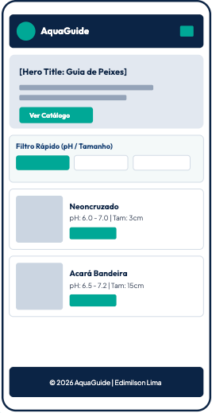
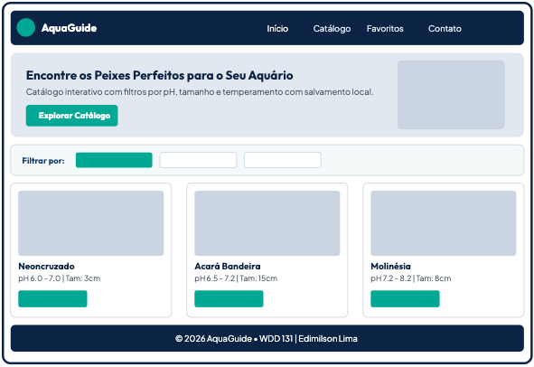

Cenário 1: Aquarista Iniciante montando seu primeiro aquário
“Tenho um aquário comunitário de 50 litros com pH neutro (6.8 a 7.0). Quais peixes pequenos e pacíficos posso colocar sem o risco de brigas entre espécies?”
Documento de Planejamento do Site
O identificador principal do projeto é o nome da marca juntamente com o seu logotipo e domínio sugerido.
Razão da Escolha: Escolhi o nome AquaGuide porque ele une o prefixo "Aqua" (relativo ao aquarismo e ecossistemas de água doce) à palavra "Guide" (guia/catálogo), transmitindo imediatamente a proposta do site aos aquaristas.
O nome reflete um portal moderno, acessível e educativo projetado para orientar criadores de peixes na escolha de espécies compatíveis de acordo com parâmetros de pH, tamanho e temperamento do aquário.
A finalidade do AquaGuide é fornecer um centro informativo interativo e intuitivo para hobbistas e criadores de peixes de água doce. O site visa resolver um dos maiores desafios do aquarismo: a escolha de espécies compatíveis que convivam em harmonia e saúde.
Serviços e Informações Prestadas:
localStorage do navegador.Cenários representam dúvidas e situações reais de pessoas do público-alvo (aquaristas iniciantes e experientes) ao visitar o site. O conteúdo do AquaGuide foi planejado para responder diretamente a estes cenários:
“Tenho um aquário comunitário de 50 litros com pH neutro (6.8 a 7.0). Quais peixes pequenos e pacíficos posso colocar sem o risco de brigas entre espécies?”
“Como posso selecionar peixes no catálogo e salvá-los na minha lista de Favoritos para consultar no celular enquanto estou presencialmente na loja de aquarismo?”
“Conheço uma espécie de peixe de água doce fascinante que ainda não está no catálogo. Onde e como posso sugerir a inclusão dessa espécie informando os parâmetros técnicos?”
O esquema de cores foi escolhido para remeter à sensação de água límpida, profundidade aquática e natureza tropical. As cores selecionadas garantem excelente contraste visual e legibilidade (padrão WCAG AAA/AA).
Nota: Este próprio documento de planejamento utiliza rigorosamente a paleta de cores apresentada abaixo!
Aplicação: Cabeçalho (header), rodapé (footer), títulos principais (H1/H2) e elementos de marca.
Aplicação: Subtítulos (H3), bordas de destaque, navegação secundária e estados de foco.
Aplicação: Botões de ação (CTA), links, linha divisória de títulos, badges ativas de filtro.
Aplicação: Texto principal do corpo da página para máximo contraste e conforto de leitura.
Aplicação: Fundo geral da página e cartões de destaque leve.
Selecionamos duas famílias de fontes contemporâneas do Google Fonts para criar uma hierarquia visual clara, moderna e legível em múltiplos dispositivos.
Aplicação: Utilizada em todos os títulos (H1, H2, H3), logotipo, nomes de botões e destaques de cabeçalho.
Pesos selecionados: Semibold (600) e Bold (700).
Aplicação: Utilizada no texto corrido dos parágrafos, listas, legendas, cartões de peixes e campos de formulário.
Pesos selecionados: Regular (400), Medium (500) e Semibold (600).
Os wireframes abaixo ilustram a organização de layout planejada para a página inicial (Home) do AquaGuide, demonstrando a adaptação responsiva tanto para dispositivos móveis (Mobile View) quanto para computadores (Desktop Wide View).

